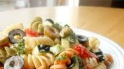

Creamy Pasta Salad

Rave Review: "This recipe is fantastic and so easy to make. The fresh basil
is a MUST and I don't change a thing. This has turned into a family favorite —
and I love it even more the next day with a little tuna mixed in for lunch."
Ingredients
- 1 cup mayonnaise
- 1 tablespoon red wine vinegar
- 1 teaspoon salt
- ¼ teaspoon ground black pepper
- 1 clove garlic, minced
- 1 ½ tablespoons chopped fresh basil
- 2 cups colored rotini pasta
- 1 cup chopped tomatoes
- ½ cup chopped yellow bell pepper
- ½ cup sliced black olives
Directions
-
Cook pasta according to package directions. Rinse in cold water, and drain.
-
In a large mixing bowl, whisk together mayonnaise, vinegar, salt, black pepper, and garlic until well blended.
Mix in basil. Add pasta, tomatoes, bell peppers, and olives; fold gently until mixed. Chill several hours. Stir gently before serving.